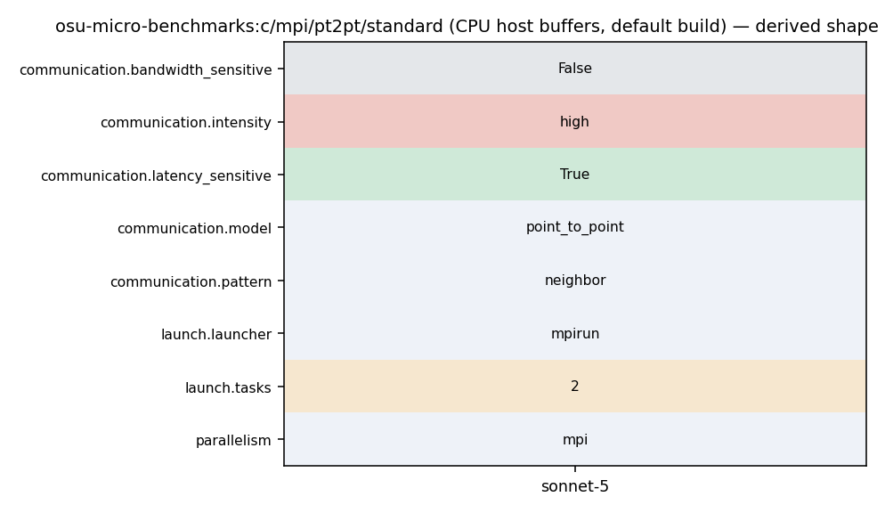

mpirun -np 2 [--hostfile hosts] ./osu_latency [-d TYPE] [H|D H|D]
1 #define BENCHMARK "OSU MPI%s Latency Test" 2 /* 3 * Copyright (c) 2002-2024 the Network-Based Computing Laboratory 4 * (NBCL), The Ohio State University.
174 MPI_CHECK(MPI_Barrier(omb_comm)); 175 t_total = 0.0; 176 177 for (i = 0; i < options.iterations + options.skip; i++) { 178 if (i == options.skip) { 179 omb_papi_start(&papi_eventset); 180 } 181 if (options.validate) { 182 set_buffer_validation(s_buf, r_buf, size, options.accel, i, 183 omb_curr_datatype, omb_buffer_sizes); 184 MPI_CHECK(MPI_Barrier(omb_comm)); 185 } 186 if (myid == 0) { 187 for (j = 0; j <= options.warmup_validation; j++) { 188 if (i >= options.skip && 189 j == options.warmup_validation) { 190 t_start = MPI_Wtime(); 191 } 192 #ifdef _ENABLE_CUDA_KERNEL_ 193 if (options.src == 'M') { 194 touch_managed_src_no_window(s_buf, size, ADD); 195 } 196 #endif /* #ifdef _ENABLE_CUDA_KERNEL_ */ 197 MPI_CHECK(MPI_Send(s_buf, num_elements, 198 omb_curr_datatype, 1, 1, omb_comm)); 199 MPI_CHECK(MPI_Recv(r_buf, num_elements, 200 omb_curr_datatype, 1, 1, omb_comm, 201 &reqstat)); 202 #ifdef _ENABLE_CUDA_KERNEL_ 203 if (options.src == 'M') { 204 touch_managed_src_no_window(r_buf, size, SUB); 205 } 206 #endif /* #ifdef _ENABLE_CUDA_KERNEL_ */ 207 if (i >= options.skip && 208 j == options.warmup_validation) { 209 t_end = MPI_Wtime(); 210 t_total += calculate_total(t_start, t_end, t_lo); 211 if (options.omb_tail_lat) { 212 omb_lat_arr[i - options.skip] = 213 calculate_total(t_start, t_end, t_lo) * 214 1e6 / 2.0;
1 #define BENCHMARK "OSU MPI%s Latency Test" 2 /* 3 * Copyright (c) 2002-2024 the Network-Based Computing Laboratory 4 * (NBCL), The Ohio State University. 5 * 6 * Contact: Dr. D. K. Panda (panda@cse.ohio-state.edu) 7 * 8 * For detailed copyright and licensing information, please refer to the 9 * copyright file COPYRIGHT in the top level OMB directory. 10 */ 11 #include <osu_util_mpi.h> 12 13 double calculate_total(double, double, double); 14 15 int main(int argc, char *argv[]) 16 { 17 int myid, numprocs, i, j; 18 int size; 19 MPI_Status reqstat; 20 omb_graph_options_t omb_graph_options; 21 omb_graph_data_t *omb_graph_data = NULL; 22 char *s_buf, *r_buf; 23 double t_start = 0.0, t_end = 0.0, t_lo = 0.0, t_total = 0.0; 24 int po_ret = 0; 25 int errors = 0; 26 size_t num_elements = 0; 27 MPI_Datatype omb_curr_datatype = MPI_CHAR; 28 size_t omb_ddt_transmit_size = 0; 29 int mpi_type_itr = 0, mpi_type_size = 0, mpi_type_name_length = 0; 30 char mpi_type_name_str[OMB_DATATYPE_STR_MAX_LEN]; 31 MPI_Datatype mpi_type_list[OMB_NUM_DATATYPES]; 32 int papi_eventset = OMB_PAPI_NULL; 33 MPI_Comm omb_comm = MPI_COMM_NULL; 34 omb_mpi_init_data omb_init_h; 35 options.bench = PT2PT; 36 options.subtype = LAT; 37 struct omb_buffer_sizes_t omb_buffer_sizes; 38 double *omb_lat_arr = NULL; 39 struct omb_stat_t omb_stat; 40 41 set_header(HEADER);
194 touch_managed_src_no_window(s_buf, size, ADD); 195 } 196 #endif /* #ifdef _ENABLE_CUDA_KERNEL_ */ 197 MPI_CHECK(MPI_Send(s_buf, num_elements, 198 omb_curr_datatype, 1, 1, omb_comm)); 199 MPI_CHECK(MPI_Recv(r_buf, num_elements, 200 omb_curr_datatype, 1, 1, omb_comm, 201 &reqstat)); 202 #ifdef _ENABLE_CUDA_KERNEL_ 203 if (options.src == 'M') { 204 touch_managed_src_no_window(r_buf, size, SUB);
194 touch_managed_src_no_window(s_buf, size, ADD); 195 } 196 #endif /* #ifdef _ENABLE_CUDA_KERNEL_ */ 197 MPI_CHECK(MPI_Send(s_buf, num_elements, 198 omb_curr_datatype, 1, 1, omb_comm)); 199 MPI_CHECK(MPI_Recv(r_buf, num_elements, 200 omb_curr_datatype, 1, 1, omb_comm, 201 &reqstat)); 202 #ifdef _ENABLE_CUDA_KERNEL_ 203 if (options.src == 'M') { 204 touch_managed_src_no_window(r_buf, size, SUB); 205 } 206 #endif /* #ifdef _ENABLE_CUDA_KERNEL_ */ 207 if (i >= options.skip && 208 j == options.warmup_validation) { 209 t_end = MPI_Wtime(); 210 t_total += calculate_total(t_start, t_end, t_lo); 211 if (options.omb_tail_lat) { 212 omb_lat_arr[i - options.skip] = 213 calculate_total(t_start, t_end, t_lo) * 214 1e6 / 2.0; 215 } 216 if (options.graph) { 217 omb_graph_data->data[i - options.skip] = 218 calculate_total(t_start, t_end, t_lo) * 219 1e6 / 2.0; 220 } 221 } 222 #ifdef _ENABLE_CUDA_KERNEL_ 223 if (options.src == 'M' && options.MMsrc == 'D' && 224 options.validate) { 225 touch_managed_src_no_window(s_buf, size, SUB); 226 } 227 #endif /* #ifdef _ENABLE_CUDA_KERNEL_ */ 228 } 229 if (options.validate) { 230 int errors_recv = 0; 231 MPI_CHECK(MPI_Recv(&errors_recv, 1, MPI_INT, 1, 2, 232 omb_comm, &reqstat)); 233 errors += errors_recv; 234 }
1037 1038 Examples: 1039 1040 - mpirun_rsh -np 2 -hostfile hostfile MV2_USE_CUDA=1 osu_latency D D 1041 - mpirun_rsh -np 2 -hostfile hostfile MV2_USE_ROCM=1 osu_latency D D 1042 1043 In this run, the latency test allocates buffers at both rank 0 and rank 1 on 1044 the GPU devices.
62 63 Examples: 64 Latency test on CPU with buffer type NumPy: 65 mpirun -np 2 --hostfile hosts python run.py \ 66 --benchmark latency --buffer numpy 67 68 Allgather test on CPU with buffer type NumPy and message lenghts 128 to 4096: 69 mpirun -np 4 --hostfile hosts python run.py \
103 break; 104 } 105 106 if (numprocs != 2) { 107 if (myid == 0) { 108 fprintf(stderr, "This test requires exactly two processes\n"); 109 } 110 111 omb_mpi_finalize(omb_init_h); 112 exit(EXIT_FAILURE); 113 } 114 115 if (options.buf_num == SINGLE) { 116 if (allocate_memory_pt2pt(&s_buf, &r_buf, myid)) {
1037 1038 Examples: 1039 1040 - mpirun_rsh -np 2 -hostfile hostfile MV2_USE_CUDA=1 osu_latency D D 1041 - mpirun_rsh -np 2 -hostfile hostfile MV2_USE_ROCM=1 osu_latency D D 1042 1043 In this run, the latency test allocates buffers at both rank 0 and rank 1 on
55 OMB_CHECK_NULL_AND_EXIT(omb_lat_arr, "Unable to allocate memory"); 56 } 57 58 omb_init_h = omb_mpi_init(&argc, &argv); 59 omb_comm = omb_init_h.omb_comm; 60 if (MPI_COMM_NULL == omb_comm) { 61 OMB_ERROR_EXIT("Cant create communicator"); 62 } 63 MPI_CHECK(MPI_Comm_rank(omb_comm, &myid)); 64 MPI_CHECK(MPI_Comm_size(omb_comm, &numprocs)); 65 66 omb_graph_options_init(&omb_graph_options); 67 if (0 == myid) {